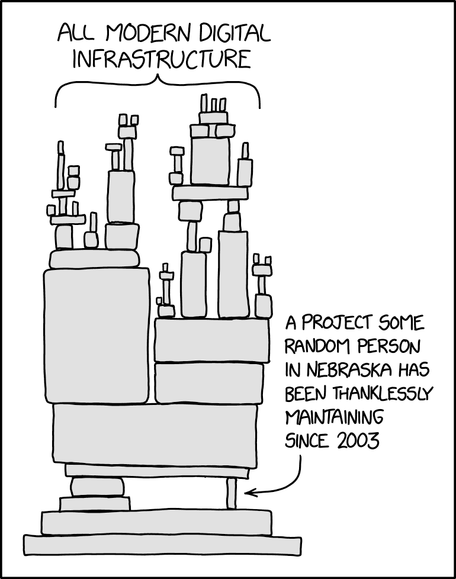

开源软件是指源代码对公众开放，允许自由使用、复制、修改和分发的软件
开源许可证可以粗略地分为两大类：
宽松自由软件许可协议 ("Permissive free software licence")
总的来说，开源项目中的软件工程实践强调了社区参与、透明度、协作和持续交付，这些特点使得开源项目具有更强的创新能力和灵活性。
OpenStack是一个开源的云计算平台，旨在提供基础设施即服务（IaaS）和平台即服务（PaaS）解决方案。 由Open Infrastructure Foundation 负责运营。 许可协议采用Apache 2.0。
Openstack项目使用launchpad来进行bug与任务追踪。
开源项目的协作模式决定了它不同于商业软件的沟通方式。 沟通主要发生在：
沟通方式：

Heartbleed是OpenSSL的一个严重漏洞，它允许攻击者在正常情况下窃取本应受SSL协议加密保护的信息。
类似问题
开源软件有虽然诸多优势，但并不能解决软件开发的所有问题。
开源生态产品化： 将开源软件或技术整合到一个完整的产品或解决方案中，并通过商业化的方式提供给最终用户或企业。
软件工程在开源生态产品化中发挥着关键作用
参与开源项目是学习和实践软件工程的绝佳选择